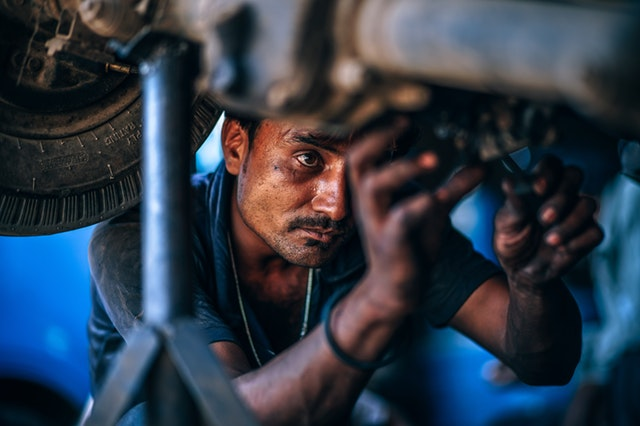

Мы находимся: 625026, г.Тюмень, ул.Мельникайте, 98, оф. 127.
Пн.-Пт.: 09:00-18:00, Сб., Вскр.: Выходные дни.
Задать вопрос или отправить заявку можно по e-mail: sudexpert72@gmail.com
ВИДЫ ЭКСПЕРТИЗ:
СТРОИТЕЛЬНО-ТЕХНИЧЕСКАЯ ЭКСПЕРТИЗА
Техническое обследование зданий и сооружений;
Судебная строительно-техническая экспертиза;
Экспертиза объемов выполненных строительно-монтажных работ;
Тепловизионное обследование;
Технадзор в период строительства;
Составление и Экспертиза Локально-Сметных расчетов;
Определение степени износа и ветхости жилья;
Экспертиза прочности бетона;
Раздел домовладения;
Экспертиза объемов выполненных работ;
Определение границ земельных участков;
Экспертиза окон, дверей, конструкций;
Стоимость ущерба от залива/ пожара и установление причины.
Иные виды строительных экспертиз (уточняйте по телефону).
БУХГАЛТЕРСКО-ЭКОНОМИЧЕСКАЯ ЭКСПЕРТИЗА
ТОВАРНАЯ ЭКСПЕРТИЗА
Экспертиза мебели;
Экспертиза меховых и кожаных изделий;
Экспертиза одежды и текстиля;
Экспертиза обуви;
Экспертиза бытовой техники;
Экспертиза сотовых телефонов и электроники.
Экспертиза ювелирных изделий.
Иные виды товарных экспертиз (уточняйте по телефону).

АВТОТЕХНИЧЕСКАЯ ЭКСПЕРТИЗА
Экспертиза по определению технического состояния ТС, их узлов и агрегатов, в том числе после ДТП;
Определение ущерба и суммы восстановительного ремонта после ДТП, некачественного ремонта СТО или действия третьих лиц;
Оценка стоимости автотранспортных средств отечественного и иностранного производства, в том числе определение остаточной стоимости автотранспорта;
Установление соответствия технического состояния транспортных средств, их узлов и деталей техническим нормам и требованиям безопасности;
Экспертиза по определению качества, наличия и характера заявленного дефекта.
ВСЕ ВИДЫ ОЦЕНКИ
Бизнеса и предприятий;
Акций и ценных бумаг;
Земельных участков;
Комерческой недвижимости;
Жилой недвижимости;
Объектов незавершенного строительства;
Транспортных средств;
Ущерба при ДТП;
Машин и оборудования;
Ущерба.
Бесплатная консультация: (3452) 51-30- 87, 8 9044 730-690, 8 9044 730-770.
Мы находимся: 625026, г.Тюмень, ул.Мельникайте, 98, оф. 127.
Пн.-Пт.: 09:00-18:00, Сб., Вскр.: Выходные дни.
Задать вопрос или отправить заявку можно по e-mail: sudexpert72@gmail.com